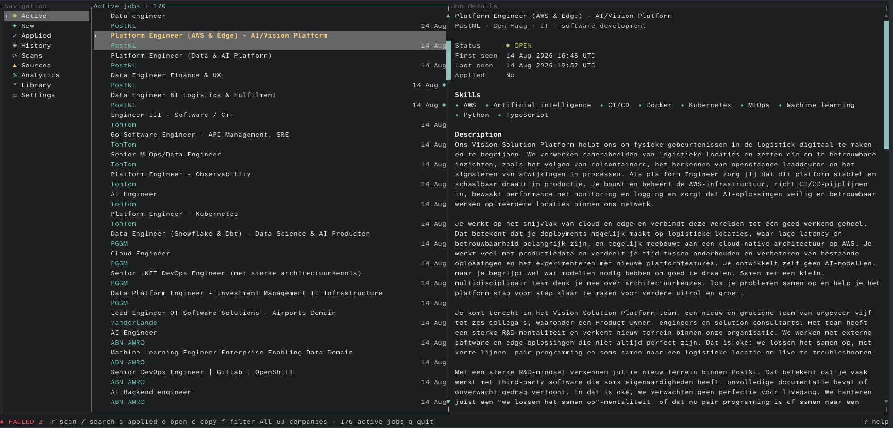
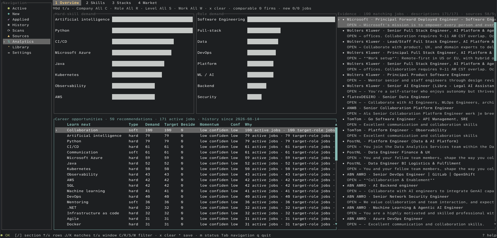

Official company sources
Scan supported employer career sources instead of relying on an opaque job feed.
TechJobsNL is a local-first terminal application for exploring technology vacancies from verified company career sources. It keeps your job research local, tracks vacancy history, and connects market insights back to the postings behind them.
TechJobsNL is designed for developers who want a fast, inspectable workflow around real company vacancies rather than another opaque recommendation feed.
Scan supported employer career sources instead of relying on an opaque job feed.
Track active, new, applied, saved, closed, and reopened vacancies.
Explore skills, roles, and market patterns while keeping every result connected to the vacancies behind it.
Your database, preferences, and job-search history stay on your machine.

Browse stored jobs, search by company or title, open the official posting, save interesting roles, and mark applications without leaving the terminal workflow.
Select a skill, role, or market signal and inspect the matching vacancies that created it.

Native release archives are available for macOS, Linux, and Windows. Your configuration, job history, analytics, and application state stay on your machine.
Latest release